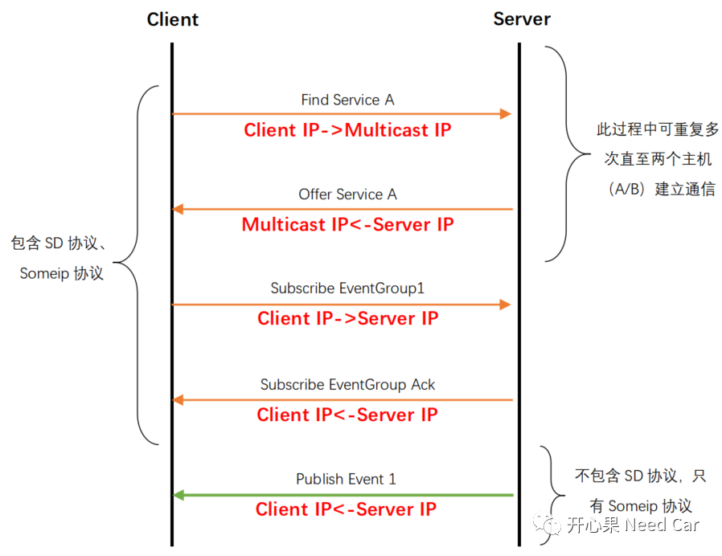
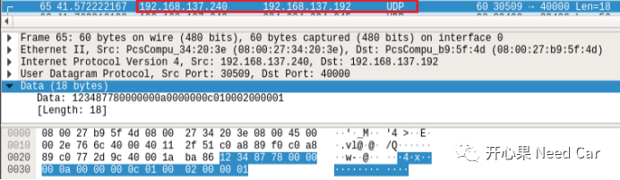

前言
Someip在SOA架构中的作用不言而喻，本文不再赘述，本文主要分析SomeIp SD（Service Discovery）的Subscribe/Notify通信过程。先说一下环境，本人在宿主机上安装三个VBox虚拟机（一个Server端，两个Client端），通过桥接的方式使得虚拟机在一个网段，Ubuntu系统。本文的抓包工具暂时没有安装解析someip插件，实际报文流的分析需要对照协议Header。本文数据交互过程只针对一个Client和一个Server。
Entry分析

Entry主要包含ServiceEntry和EventGroupEntry两类。两者的主要不同如下红框所示：

根据TTL和Type判断Entry类型，如下所示：


实际通信报文流如下所示，多播地址：224.224.224.245，其中多播地址需要静态添加到路由表。

通信交互过程：
(1)客户端（IP：192.168.137.192）向多播地址（IP:224.224.224.245）请求服务，如果此时提供服务的主机没有运行，则该请求会重复多次，具体示例如下所示：

客户端（Client）请求报文中的Type = 0x00，TTL = 0xFFFFFF，此时的entry即是find service entry。
(2)服务端（IP:192.168.137.240）向多播地址（IP:224.224.224.245）发送自身服务，如果此时有客户端请求服务，则与客户端建立通信，进而提供服务，具体发送如下所示：
示例：没有客户端请求对应服务

(3)客户端（IP：192.168.137.192）向已运行服务端（IP:192.168.137.240）订阅事件，具体如下所示：

此时Type = 0x06，TTL = 0x03，Entry类型属于subscribe Event group。
(4)服务端（IP:192.168.137.240）向客户端（IP：192.168.137.192）应答订阅事件，如下所示：

此时Type = 0x07，TTL = 0x03，Entry类型属于subscribe Event group ACK。
(5)服务端（IP:192.168.137.240）向客户端（IP：192.168.137.192）发布事件，如下所示：

这里的事件ID是0x8778，事件对应的有效数据0x00 0x01。
如上是描述事件请求/应答/发布过程，如果想进一步理解订阅事件和事件通知/发布还需对比SD的启动时序。